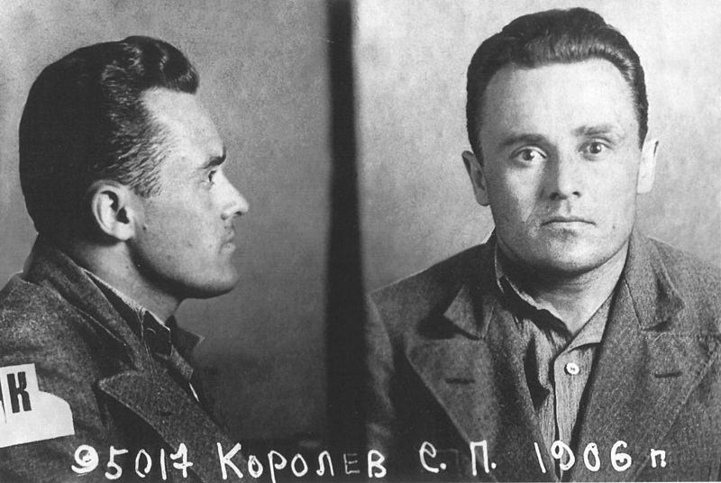
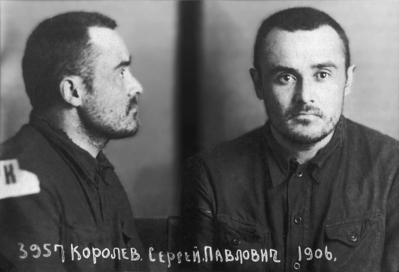

Сергей Павлович Королёв
 Сергей Королёв является одним из основных создателей советской ракетно-космической техники, обеспечившей стратегический паритет и сделавшей Союз Советских Социалистических Республик передовой ракетно-космической державой, и ключевой фигурой в освоении человеком космоса, основателем практической космонавтики. Под его руководством был организован и осуществлён запуск первого искусственного спутника Земли и первого космонавта планеты Юрия Гагарина. Дважды Герой Социалистического Труда, лауреат Ленинской премии. Член КПСС с июля 1953 года. Скончался 14 января 1966 года в Москве, похоронен в некрополе у Кремлёвской стены.
Сергей Королёв является одним из основных создателей советской ракетно-космической техники, обеспечившей стратегический паритет и сделавшей Союз Советских Социалистических Республик передовой ракетно-космической державой, и ключевой фигурой в освоении человеком космоса, основателем практической космонавтики. Под его руководством был организован и осуществлён запуск первого искусственного спутника Земли и первого космонавта планеты Юрия Гагарина. Дважды Герой Социалистического Труда, лауреат Ленинской премии. Член КПСС с июля 1953 года. Скончался 14 января 1966 года в Москве, похоронен в некрополе у Кремлёвской стены.
Детство
Сергей Королёв родился поздним вечером 30 декабря 1906 (12 января 1907) года в городе Житомире[3] в семье учителя русской словесности Павла Яковлевича Королёва (1877—1929), родом из Могилёва, и дочери нежинского купца — Марии Николаевны Москаленко (Баланиной) (1888—1980)[4]. Крестили его в Софийской церкви.
Начало карьеры
В 1921 году познакомился с лётчиками Одесского гидроотряда и активно участвовал в авиационной общественной жизни: с 16 лет — как лектор по ликвидации «авиабезграмотности», а с 17 — как автор проекта безмоторного самолёта К-5, официально защищённого перед компетентной комиссией и рекомендованного к постройке.
В 1923 году он стал членом ОАВУК — Общество авиации и воздухоплавания Украины и Крыма. Сохранилась его характеристика члена: «Дано сие тов. Королёву С. П. в том, что он в кружке планеристов Губотдела ОВУАК с июня 1923 года принимал активное участие во всех работах».
Поступив в 1924 году в Киевский политехнический институт по профилю авиационной техники, Королёв за два года освоил в нём общие инженерные дисциплины и стал спортсменом-планеристом. Осенью 1926 года он перевёлся в Московское высшее техническое училище (МВТУ) имени Н. Э. Баумана.
За время учёбы в МВТУ С. П. Королёв уже получил известность как молодой способный авиаконструктор и опытный планерист. 2 ноября 1929 года на планёре «Жар-птица» конструкции М. К. Тихонравова Королёв сдал экзамены на звание «пилот-паритель», а в декабре того же года под руководством Андрея Николаевича Туполева защитил дипломную работу — проект самолёта СК-4. Спроектированные им и построенные летательные аппараты — планёры «Коктебель», «Красная Звезда» и лёгкий самолёт СК-4, предназначенный для достижения рекордной дальности полёта, — показали незаурядные способности Королёва как авиационного конструктора. Так, планер СК-3 «Красная Звезда» впервые в СССР был специально спроектирован для выполнения фигур высшего пилотажа и, в частности, мёртвой петли, что и было успешно продемонстрировано лётчиком В. А. Степанчонком в ходе VII Всесоюзного планерного слёта в Коктебеле 28 октября 1930 г.
Идея построить ракетоплан у С. П. Королёва появилась «после знакомства с трудами Циолковского и близкого знакомства с Цандером». В сентябре 1931 года С. П. Королёв и талантливый энтузиаст в области ракетных двигателей Ф. А. Цандер добились создания в Москве с помощью Осоавиахима общественной организации — Группы изучения реактивного движения (ГИРД); в апреле 1932 года она стала по существу государственной научно-конструкторской лабораторией по разработке ракетных летательных аппаратов, в которой были созданы и запущены первые советские жидкостно-баллистические ракеты (БР) ГИРД-09 и ГИРД-10.
17 августа 1933 года был осуществлён первый удачный пуск ракеты ГИРД.
Дивинженер С. П. Королёв в 1933 году В 1933 году приказом Реввоенсовета на базе московской ГИРД и ленинградской Газодинамической лаборатории (ГДЛ) был создан Реактивный научно-исследовательский институт НК ВиМД СССР под руководством И. Т. Клеймёнова. Королёв был сначала назначен его заместителем, но уже в начале 1934 он был освобождён от этой должности. В 1935 году он стал начальником отдела ракетных летательных аппаратов; в 1936 году ему удалось довести до испытаний крылатые ракеты: зенитную — 217 с пороховым ракетным двигателем и дальнобойную — 212 с жидкостным ракетным двигателем. В его отделе к 1938 году были разработаны проекты жидкостных крылатой и баллистической ракет дальнего действия, авиационных ракет для стрельбы по воздушным и наземным целям и зенитных твердотопливных ракет. Однако расхождения во взглядах на перспективы развития ракетной техники заставили Королёва оставить пост заместителя директора, и он был назначен на должность начальника сектора.
В феврале 1938 года в совместном с Е. С. Щетинковым докладе Королёв изложил возможности использования ракетоплана в различных целях, в том числе обосновал его применение в роли высотного истребителя-перехватчика. Вплоть до ареста 27 июня того же года он продолжал работать над прототипом ракетоплана с жидкостным реактивным двигателем. Впоследствии работа над этим проектом продолжилась под руководством А. Я. Щербакова, первый полёт ракетоплана РП-318-1 с работающим двигателем состоялся 28 февраля 1940 года.
Арест и работа в закрытых КБ
Королёв был арестован 27 июня 1938 года, после ареста Ивана Терентьевича Клеймёнова и других работников Реактивного института. Арест Королёва санкционировал М. Ю. Рагинский — заместитель Генерального прокурора А. Я. Вышинского. Постановление на арест Королёва писал Жуковский. Основания для ареста: показания И. Т. Клеймёнова (расстрелян), Г. Э. Лангемака (расстрелян), В. П. Глушко — все трое называли С. П. Королёва соучастником контрреволюционной троцкистской организации внутри РНИИ, «ставящей своей целью ослабление оборонной мощи в угоду фашизму». Следствие по делу вели лейтенанты, оперуполномоченные НКВД Быков Николай Фёдорович[19] и Шестаков Михаил Николаевич[20][21].
Его обвинили по статье 58-й, по двум её пунктам: 58-7 — «Подрыв государственной промышленности …, совершённый в контрреволюционных целях путём соответствующего использования государственных учреждений и предприятий, или противодействие их нормальной деятельности» — и 58-11 — «Всякого рода организационная деятельность, направленная к подготовке или совершению предусмотренных в настоящей главе преступлений …». Королёва обвиняли в том, что с 1935 года он проводил преступную работу по срыву отработки и сдачи на вооружение РККА новых образцов вооружения.
Существует версия о том, что он был подвергнут пыткам: ему сломали челюсть. Однако журналист Я. К. Голованов в своих книгах подвергает версию сомнению и подчёркивает, что доказательства этого отсутствуют
Десятого июня 1940 года срок сокращён до 8 лет ИТЛ, освобождён в 1944 году.
По его заявлению в Военную прокуратуру от 30 мая 1955 года реабилитирован «за отсутствием состава преступления» 18 апреля 1957 года.
После ареста. Бутырская тюрьма, 28 июня 1938 г. Сергей Королёв прошёл Бутырку в Москве, пересыльную тюрьму в Новочеркасске.
21 апреля 1939 года попал на Колыму, где c 3 августа находился на золотом прииске Мальдяк Западного горнопромышленного управления и был занят на так называемых «общих работах».
Бороться за пересмотр дела С. П. Королёва первой начала его мать М. Н. Баланина, заручившись поддержкой депутатов Верховного Совета СССР М. М. Громова и В. С. Гризодубовой. Приговор от 27 сентября 1938 года был отменён и дело передавалось на новое рассмотрение. В результате С. П. Королёв 23 декабря 1939 года был направлен с прииска Мальдяк в распоряжение Владлага и потом в Москву на пересмотр дела. По дороге с прииска С. П. Королёв заболел и оказался в лазарете. Он опоздал в Магадане на последний рейс парохода «Индигирка» перед закрытием навигации. Возможно, это спасло Сергея Павловича от смерти: пароход затонул в Японском море во время шторма, погибло 696 из 1173 человек на борту.
С. П. Королёв через 18 месяцев заключения, 29 февраля 1940 г. В Москву прибыл 2 марта 1940 года, где спустя четыре месяца был судим вторично Особым совещанием, приговорён к 8 годам заключения и направлен в московскую спецтюрьму НКВД ЦКБ-29, где под руководством А. Н. Туполева, также заключённого, принимал активное участие в создании бомбардировщиков Пе-2 и Ту-2 и одновременно инициативно разрабатывал проекты управляемой аэроторпеды и нового варианта ракетного перехватчика.
Это послужило причиной для перевода С. П. Королёва в 1942 году в другое КБ тюремного типа — ОКБ-16 при Казанском авиазаводе № 16 (ныне — Открытое акционерное общество «Казанское моторостроительное производственное объединение» /ОАО КМПО/), где велись работы над ракетными двигателями новых типов с целью применения их в авиации. Здесь С. П. Королёв со свойственным ему энтузиазмом отдаётся идее практического использования ракетных двигателей для усовершенствования авиации: сокращения длины разбега самолёта при взлёте и повышения скоростных и динамических характеристик самолётов во время воздушного боя.
В начале 1943 года он был назначен главным конструктором группы реактивных установок. Занимался улучшением технических характеристик пикирующего бомбардировщика Пе-2, первый полёт которого с действующей ракетной установкой состоялся в октябре 1943 года.
По воспоминаниям Л. Л. Кербера, С. П. Королёв был скептик, циник и пессимист, абсолютно мрачно смотревший на будущее. «Хлопнут без некролога», — была любимая его фраза. Вместе с этим есть высказывание лётчика-космонавта Алексея Леонова относительно С. П. Королёва: «Он никогда не был озлоблен… Он никогда не жаловался, никого не проклинал, не ругал. У него на это не было времени. Он понимал, что озлобленность вызывает не творческий порыв, а угнетение».
В июле 1944 года С. П. Королёва досрочно освободили из заключения со снятием судимости, но без реабилитации (протокол от 27 июля 1944 года заседания Президиума Верховного Совета СССР) по личному указанию И. В. Сталина, после чего он ещё год проработал в Казани. 12 января 2007 года на здании (проходной) ОАО КМПО был торжественно открыт горельеф С. П. Королёва работы скульптора М. М. Гасимова.
С. П. Королёв стал одним из первых преподавателей на кафедре реактивных двигателей Казанского авиационного института.
 
Разработка баллистических ракет
8 сентября 1945 года С. П. Королёв вылетел в Берлин, чтобы в советской оккупационной зоне (в Тюрингии) участвовать в изучении трофейной ракетной техники. В 1946 году там был создан новый советско-германский ракетный институт «Нордхаузен», главным инженером которого был назначен С. П. Королёв.
Для изучения и воспроизведения ракет ФАУ-2 на крупном подмосковном артиллерийском заводе № 88 в конце 1945 года было организовано Специальное конструкторское бюро по ракетной технике (СКБ РТ). Когда представители СКБ РТ прибыли в институт «Нордхаузен» для ознакомления с ФАУ-2, было принято решение назначить руководителем изготовления копии ФАУ-2 Королёва.
В 1946 году он был назначен начальником отдела № 3 НИИ-88. В то же время должность Главного конструктора СКБ РТ была заменена на должность начальника и введены должности главных конструкторов по каждой ракете. В результате Королёв стал Главным конструктором.
Говоря о конструировании советских ракет, последовавших за Р-1, трудно разграничить временные периоды по их созданию. Так, об Р-2 Королёв задумывался ещё в Германии, когда проект Р-1 ещё не обсуждался, Р-5 разрабатывался им ещё до сдачи Р-2, а ещё раньше началась работа над небольшой мобильной ракетой Р-11 и первые расчёты по межконтинентальной ракете Р-7.
В 1948 году С. П. Королёв начал лётно-конструкторские испытания баллистической ракеты Р-1 (аналога Фау-2) и в 1950 году успешно сдаёт её на вооружение.
Распоряжением правительства СССР от 24.04.1950 было создано ОКБ-1 НИИ-88 МВ СССР, а его начальником и Главным конструктором стал Королёв.
В течение одного только 1954 года Королёв одновременно работал над различными модификациями ракеты Р-1 (Р-1А, Р-1Б, Р-1В, Р-1Д, Р-1Е), закончил работу над Р-5 и наметил пять разных её модификаций, завершил сложную и ответственную работу над ракетой Р-5М — с ядерным боевым зарядом. Шли работы по Р-11 и её морскому варианту Р-11ФМ, и всё более ясные черты приобретала межконтинентальная Р-7.
В 1956 году под руководством С. П. Королёва была создана двухступенчатая межконтинентальная баллистическая ракета Р-7 с отделяющейся головной частью массой 3 тонны и дальностью полёта 8 тыс. км. Ракета была успешно испытана в 1957 году на построенном для этой цели полигоне № 5 в Казахстане (нынешний космодром Байконур). Для боевого дежурства этих ракет в 1958—1959 годах была построена боевая стартовая станция (объект «Ангара») в районе посёлка Плесецк (Архангельская область, нынешний космодром Плесецк). Модификация ракеты Р-7А с увеличенной до 11 тыс. км дальностью состояла на вооружении РВСН СССР с 1960 по 1968 годы.
В 1957 году Сергеем Павловичем были созданы первые баллистические ракеты на стабильных компонентах топлива (мобильного наземного и морского базирования); он стал первопроходцем в этих новых и важных направлениях развития ракетного вооружения.
Первый искусственный спутник Земли
В 1955 году (задолго до лётных испытаний ракеты Р-7) С. П. Королёв, М. В. Келдыш, М. К. Тихонравов вышли в правительство с предложением о выведении в космос при помощи ракеты Р-7 искусственного спутника Земли (ИСЗ). Правительство поддержало эту инициативу. В августе 1956 года ОКБ-1 вышло из состава НИИ-88 и стало самостоятельной организацией, главным конструктором и директором которой был назначен С. П. Королёв.
Для реализации пилотируемых полётов и запусков автоматических космических станций С. П. Королёв разработал на базе боевой ракеты семейство совершённых трёх- и четырёхступенчатых носителей.
4 октября 1957 года был запущен на околоземную орбиту первый в истории человечества искусственный спутник Земли. Запуск спутника высоко поднял международный авторитет СССР как страны передовой науки и техники.
«Он был мал, этот самый первый искусственный спутник нашей старой планеты, но его звонкие позывные разнеслись по всем материкам и среди всех народов как воплощение дерзновенной мечты человечества», — сказал позже С. П. Королёв.
Другие спутники и запуск космических аппаратов на Луну
Параллельно с подготовкой к пилотируемым полётам велись работы над спутниками научного, народнохозяйственного и оборонного назначения. В 1958 году разработаны и выведены в космос геофизический Спутник-3, а затем и парные спутники «Электрон» для исследования радиационных поясов Земли. В 1959 году созданы и запущены три автоматические станции к Луне: «Луна-1» пролетела вблизи Луны, впервые зарегистрировав Солнечный ветер, «Луна-2» впервые в мире совершила перелёт с Земли на другое космическое тело, доставив на Луну вымпелы Советского Союза, «Луна-3» впервые выполнила фотографирование обратной (невидимой с Земли) стороны Луны, было отснято около 70 % обратной стороны Луны. В дальнейшем С. П. Королёв начал разработку более совершенного лунного аппарата для мягкой посадки на поверхность Луны, фотографирования и передачи на Землю лунной панорамы (объект Е-6).
Человек в космосе
12 апреля 1961 г. С. П. Королёв снова поразил мировую общественность. Создав первый пилотируемый космический корабль «Восток-1», он реализовал первый в мире полёт человека в космос — гражданина СССР Юрия Алексеевича Гагарина — по околоземной орбите. Сергей Павлович в решении проблемы освоения человеком космического пространства не спешил. Первый космический корабль сделал только один виток: никто не знал, как человек будет себя чувствовать при столь продолжительной невесомости, какие психологические нагрузки будут действовать на него во время необычного и неизученного космического путешествия.
За подготовку первого полёта человека в космос С. П. Королёв был вторично удостоен звания Героя Социалистического Труда (Указ не публиковался).
Вслед за первым полётом Ю. А. Гагарина 6 августа 1961 года Германом Степановичем Титовым на корабле «Восток-2» был совершён второй космический полёт, который длился одни сутки. Опять — скрупулёзный анализ влияния условий полёта на функционирование организма. Затем совместный полёт космических кораблей «Восток-3» и «Восток-4», пилотируемых космонавтами А. Г. Николаевым и П. Р. Поповичем, с 11 по 12 августа 1962 года; между космонавтами была установлена прямая радиосвязь. На следующий год — совместный полёт космонавтов В. Ф. Быковского и В. В. Терешковой на космических кораблях «Восток-5» и «Восток-6» с 14 по 16 июня 1963 года: изучается возможность полёта в космос женщины. После полёта С. Королёв сказал своей жене, что женщинам в космосе не место.
С 12 по 13 октября 1964 года на более сложном космическом корабле «Восход» в космосе был экипаж из трёх человек различных специальностей: командира корабля, бортинженера и врача.
Первый в мире выход в открытый космос состоялся 18 марта 1965 года во время полёта корабля «Восход-2» с экипажем из двух человек. Космонавт А. А. Леонов в скафандре вышел через шлюзовую камеру и находился вне корабля около 20 минут.
Проект освоения Марса
С. П. Королёву принадлежит приоритет в деле практического начала работ по пилотируемым полётам на Марс. По сведениям американских источников, в 1959 году С. П. Королёв убедил советское руководство поддержать разработку проекта по посылке марсохода на Марс. Команда С. П. Королёва начала разработку сверхтяжёлой межпланетной ракеты с кодовым названием ТМК — Тяжёлый межпланетный корабль. Ракета должна была выводиться ракетой-носителем сверхтяжёлого класса Н-1. 12 апреля 1960 года С. П. Королёв известил советское руководство об изменении плана и добавлении задачи посадки космонавтов на поверхность Марса[источник не указан 77 дней], когда 3 или 4 космических аппарата одновременно летят к Красной планете. Хотя данная инициатива не получила одобрения со стороны Кремля, это ещё не было концом программы по посылке людей на Марс. Идеи исследований других планет с помощью пилотируемых станций продолжали развиваться и набирали всё большую поддержку в среде учёных и инженеров космических программ.
Проект орбитальной станции
Продолжая развивать программу пилотируемых околоземных полётов, Сергей Павлович начал реализовывать свои идеи о разработке пилотируемой ДОС (долговременная орбитальная станция). Её прообразом явился принципиально новый, более совершенный, чем предыдущие, космический корабль «Союз». В состав этого корабля входил бытовой отсек, где космонавты могли долгое время находиться без скафандров и проводить научные исследования. В ходе полёта предусматривались также автоматическая стыковка на орбите двух кораблей «Союз» и переход космонавтов из одного корабля в другой через открытый космос в скафандрах. Сергей Павлович не дожил до воплощения своих идей в космических кораблях «Союз».
Лунный проект
Ещё в середине 1950-х годов Королёв вынашивал идеи запуска человека на Луну. Соответствующая космическая программа разрабатывалась при поддержке Н. С. Хрущёва. Основным содержанием ее было осуществление советской пилотируемой экспедиции на поверхность Луны на основе применения сверхтяжелой ракеты, получившей наименование Н-1. Однако эта программа так и не была реализована ни при жизни Сергея Павловича, ни позже из-за совокупности причин, среди которых называются, например, отсутствие единоначалия (программа разрабатывалась под руководством Минобороны СССР, в котором Королёв не работал), разногласия с главным конструктором ракетных двигателей В. П. Глушко, а также смена руководства КПСС — Л. И. Брежнев не придавал лунной программе такого значения, как Хрущёв. Основные технические решения проекта советской лунной пилотируемой экспедиции были разработаны под непосредственным руководством Королёва. После смерти Сергея Павловича и ряда неудачных попыток запуска Н-1 советская программа пилотируемого полёта на Луну была постепенно свёрнута в пользу исследования Луны беспилотными космическими аппаратами.
История болезни и смерть
Оперировал Сергея Павловича министр здравоохранения СССР, действительный член АМН СССР, профессор Б. В. Петровский, а ассистировал Петровскому заведующий хирургическим отделением, доцент, кандидат медицинских наук Д. Ф. Благовидов. В середине операции был срочно вызван профессор А. А. Вишневский в качестве консультанта.
Во время проведения операции у Королёва открылось кровотечение. Остановить его, удалив полипы, не удалось. Было принято решение вскрыть брюшную полость. Это не входило в первоначальный план операции и не было заранее подготовлено со стороны анестезиологов. Как прореагирует сердце больного на общую анестезию, никто сказать не мог: в больнице Королёву ни разу не сделали ЭКГ. Когда стали подбираться к месту кровотечения, обнаружили опухоль величиной с кулак. Это была саркома — злокачественная опухоль. Петровский принял решение удалить саркому. При этом произвели удаление части прямой кишки. Предстояло вывести оставшуюся часть через брюшину. Из-за короткой шеи Королёва при интубации трахеи возникли сложности: ему не смогли правильно ввести дыхательную трубку в трахею. Существует версия (см. цитату в соответствующем разделе), что сложности возникли не только из-за короткой шеи, но и того, что у Королёва могли быть травмы челюстей. Остановка сердца произошла спустя 30 минут после окончания операции, ещё на операционном столе.